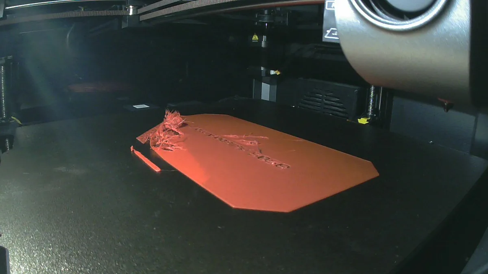
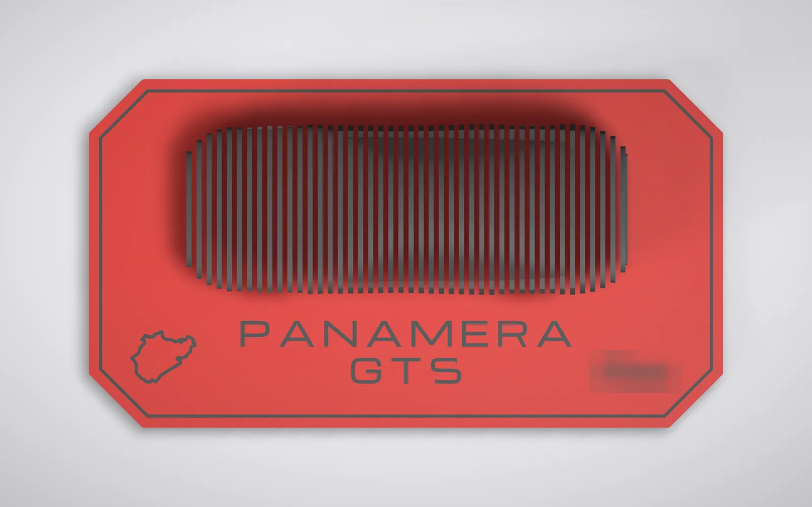
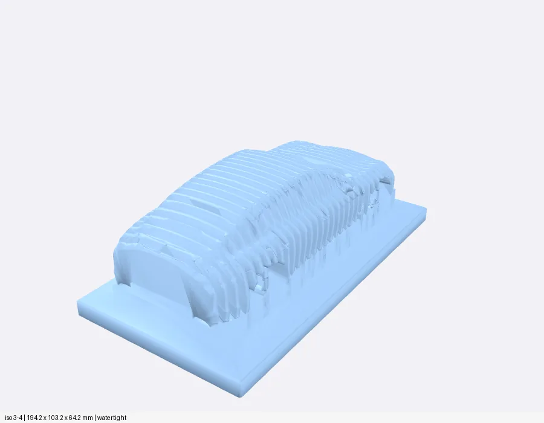
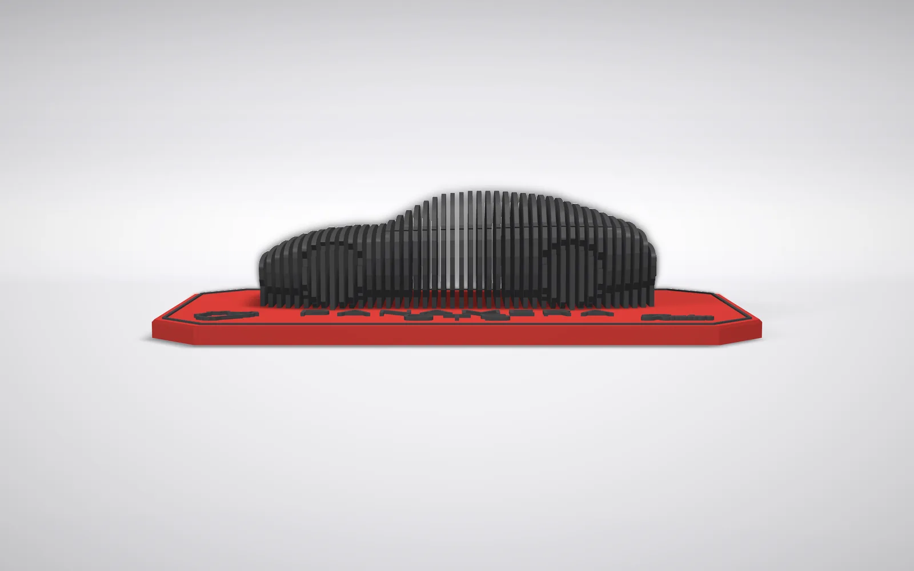
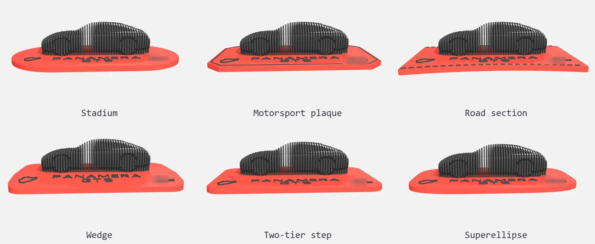
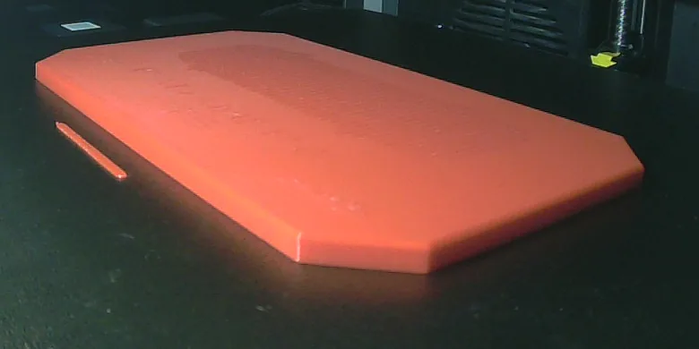
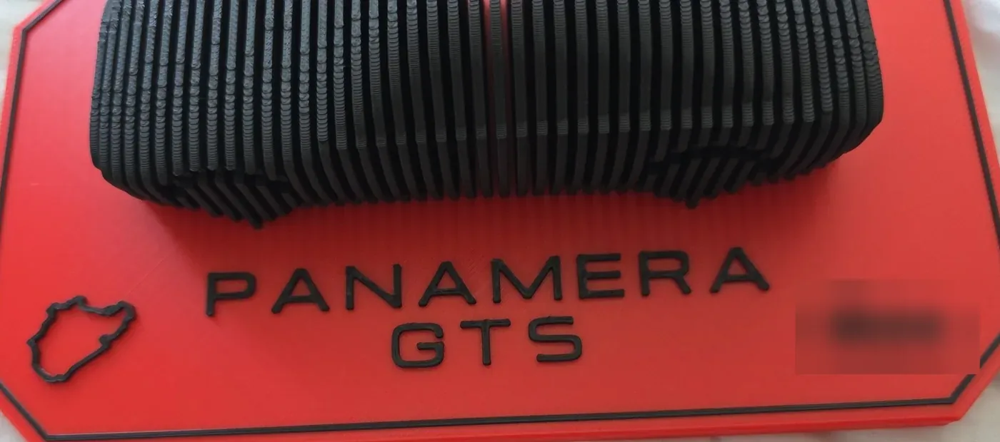
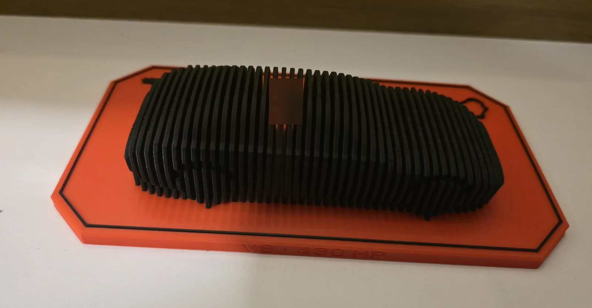
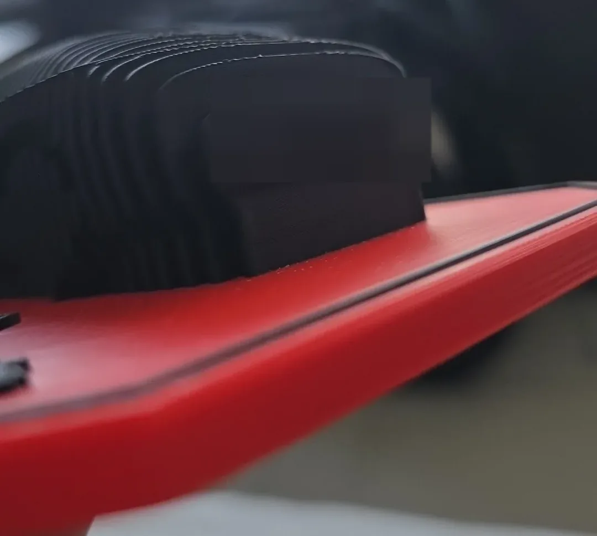
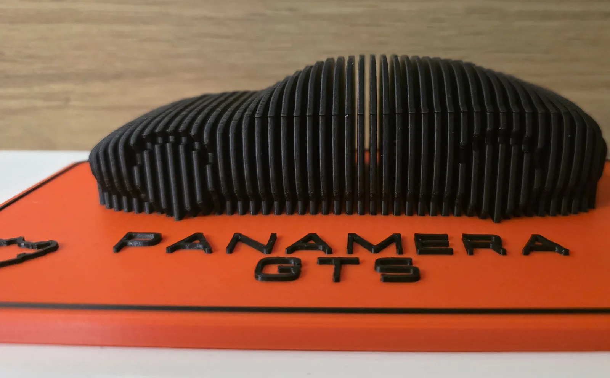

3D prints · No. 01
A Panamera in 44 slices
Eight versions drawn in code, a print that stopped after 22 minutes, and a first layer in a knot. The cause was under the base.
- PLA
- 0.12 mm layers
- 7 h 37 min printing
- 192 g
- 2 prints, 1 stopped

At 22:53 on a Saturday night the printer stopped itself, 22 minutes into a print meant to run all night. Through its camera I could see a knot of red plastic at one corner of the plaque and loose strands lying across the lettering engraved under the base.

That was version 8 of a desk sculpture: a Porsche Panamera GTS cut across into thin black plates, each one the shape of the car at one point along its length. The plates stand in a row on a red plaque with gaps between them. Look from the side and the gaps close up and the car comes back. I'd seen synysthh's sliced Panamera GTS on Cults3D and wanted one of my own, of the first-generation car, the 970.
The whole thing is one script in CadQuery, a Python library for CAD. It makes 44 slices, each 1.6 mm thick, plus the octagonal plaque, the lettering, the border and a short message engraved under the base: From Abdallah, 2026. The printer has one nozzle, so the second colour comes from a pause. The red plaque prints up to 6.0 mm, the printer pauses before the first black layer at 6.12 mm, I swap to black, and it carries on with the car and the letters.

Not even close
The first four versions were sliced from lnbjfu's print-in-place Panamera, a car model on MakerWorld. They sliced cleanly and looked like a generic fastback. My verdict on them was three words: not even close.
Version 1 · from the mesh

Version 8 · from the car's numbers

So version 5 threw the mesh away and started from the real car's numbers, scaled from its 4,970 mm length down to 140 mm. The roofline was traced from a side photo of a 970, the widths came from a published drawing, and every slice was rebuilt from those. Then a script laid the model's side silhouette over the drawing, and nothing moved on until the two lined up. That silhouette never changed again.
Making it print
The shape was right, but the first time I sliced it with supports allowed, the slicer wanted 44,275 support moves. Almost all of them were inside the wheel arches. Each arch was a groove with a flat roof 7.3 mm wide, in every slice. The support under those roofs would have sat in gaps about 1.6 mm wide, and no tool gets in there to take it out.
So every slice outline is now limited to how far a bare wall can lean out without support, every raised detail got a chamfer underneath, and the arch grooves got pointed roofs instead of flat ones. I tried making them shallower too, but at 1.7 mm deep the arches vanished from the renders, so they stayed 2.8 mm deep.
Before · version 6
After · version 8
But every slice has a seam, the small bump where each layer's outer wall starts and ends. I had rotated the model in the file so the slicer would put its seams on the hidden side. When the plaque became an octagon, the slicer's auto-arrange rotated it again, and the seams landed on the front. Now the model goes in unrotated, and before every print a script plots each seam from the G-code.
Back
Front · title side
Then the preview showed the plaque's raised letters, which have strokes 1 mm wide, printing as single beads 0.29 mm wide. They would have looked scratched in, not raised. The cause was a setting called Precise outer wall, which pulls the outer wall inward so outside sizes come out exact. On a stroke that thin it leaves room for one bead. Switching it off brought the letters back to full width.
The plaque, meanwhile, had been a plain rectangle all along, and a plain rectangle is what it looked like. I drew six shapes for it in one go: a stadium, a motorsport plaque (an octagon with a raised border), a road section with kerbs, a wedge, a two-tier step and a superellipse. The wedge and the step broke the single colour change, so they were out first. The octagon won.

By then the shape matched the drawing, the supports were gone, the seams were on the back and the letters were full width. Attempt 1 started at 22:31. Every check I knew how to run said yes.
Back to 22:53
The usual suspects for a print that stops itself were a pause in the file or the filament sensors, which had paused a print on this machine before. Neither. The printer's log had the answer: Obico, an add-on that watches the printer's camera for failed prints, had seen the knot and paused it.
Layer 1 had come apart around the message engraved under the base. It prints as gaps in the very first layer, and I had never looked at what the insides of the letters became. The centres of the o, A, b, d, a, a, 0 and 6 in From Abdallah, 2026 were islands: eight separate pieces on layer 1, each 6 to 26 mm², joined to nothing. They lifted, and the nozzle dragged them around. A 0.12 mm first layer on a bed that is 0.27 mm out of flat had not helped.
Attempt 1
Attempt 2
The fix was a stencil trick, the little bridges that hold the middle of an O in place on a stencil. Each letter centre got a 0.9 mm bridge to the rest of the base, and layer 1 went from nine separate pieces, the base and its eight islands, to one. The letters still read fine.
The first layer itself also got thicker, 0.24 mm instead of 0.12, and slower, to ride over that high corner of the bed.
Two and a half hours after the stop, with the bridges in the file, attempt 2 started at 01:23. At 03:42 it stopped where it was meant to, with the red plaque finished and flat.

Eight minutes later the black was loaded and the slices started going up.
At 09:24 it was done. The title, the track outline and the border came out crisp.

It came off the bed in one piece, with nothing to cut away. The number plate on the tail, pixelated in these photos, came out a little soft. Everything else was sharp.
From the back

The tail


What I check now
Before anything with text underneath goes to the printer, I count the islands on layer 1. It takes a minute, and it would have saved the first attempt.
The short version
What went wrong, and what fixed it.
- The first four versions didn't look like the car.Rebuilt every slice from the real 970's dimensions and checked the silhouette against a drawing.
- 44,275 support moves inside the wheel arches.No slice leans out more than 43° from vertical, 45° roofs on the arch grooves.
- The seams landed on the side you look at.Stopped pre-rotating the model, and plot the seams from the G-code before printing.
- Letter strokes printing as single 0.29 mm beads.Precise outer wall off.
- Loose letter centres under the base tore off on layer 1.0.9 mm stencil bridges, so layer 1 is one piece.
- A 0.12 mm first layer on a bed with 0.27 mm of spread.0.24 mm first layer at 30 mm/s.
Built on
Where the ideas came from. Their files stay on their pages.
- Porsche Panamera GTS, parametric sliced car sculpturesynysthh · Cults3D · Cults private use (paid)The idea: a black car in slices on a red plate. I liked it and drew my own from the real car's numbers.
- Porsche Panamera, print in placelnbjfu · MakerWorld · Standard Digital File LicenseThe mesh my first four versions were sliced from, before I switched to the real dimensions.
- Nürburgring NordschleifeOpenStreetMap contributors · OpenStreetMap · ODbLThe track outline on the plaque.
How it was printed
- Printer
- Creality K1 Max, rooted, Klipper
- Slicer
- OrcaSlicer 2.4.2, profile K1M 0.12 Fine
- Nozzle
- 0.4 mm, 210 °C (215 °C first layer)
- Bed
- 60 °C
- Material
- PLA, red for the plaque, black for the car and lettering
- Layers
- 0.12 mm, first layer 0.24 mm
- Walls, infill
- 3 walls, 15 % crosshatch
- Size
- 200 × 110 × 46 mm, 44 slices 1.6 mm thick
- Supports
- None
- Colour change
- Pause at 6.12 mm, red out, black in, resume
- Time
- 7 h 37 min printing, 8 h 2 min with heat-up and the swap
- Plastic
- 192 g
Settings that mattered
The profile’s value, then what this print used.
- First layer height 0.12 changed to 0.24 mm
- First layer speed 60 changed to 30 mm/s
- First layer infill speed 105 changed to 40 mm/s
- Precise outer wall on changed to off
PANAMERA and GTS are Porsche trademarks. This is a fan piece, not a Porsche product.
The files
The sculpture as one STL, a preview and a README with the settings. The name on the plaque and the number plate are left out of the file.
- Model, STLpanamera-sculpture.zip904 KB
License: CC BY-NC-SA 4.0. Credit: Abdallah El Belkasy, abdaishere.com/prints. The track outline is © OpenStreetMap contributors (ODbL), as the README says.